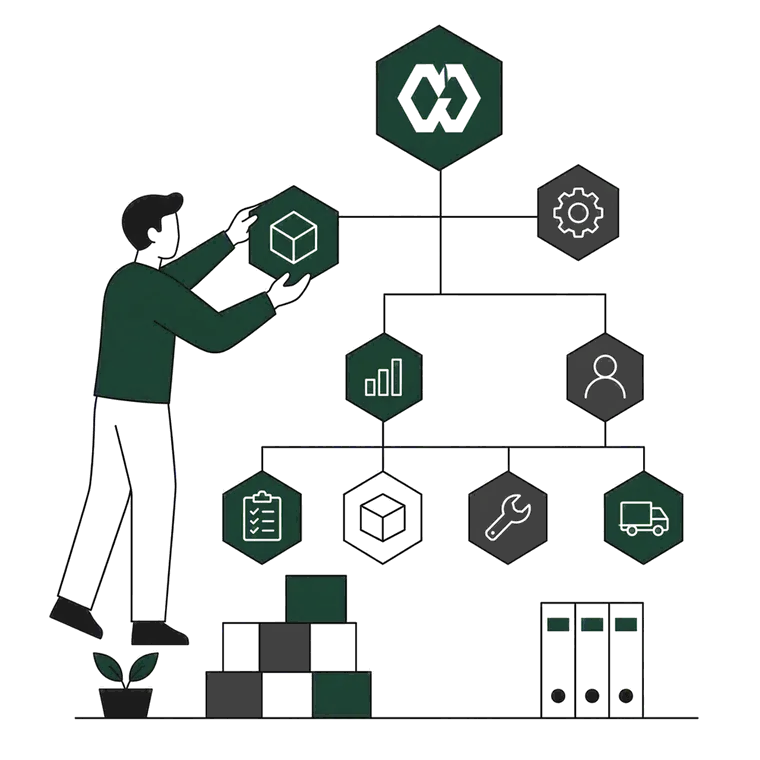

Über uns
Beratung und digitale Umsetzung für Instandhaltung, Ersatzteil- und Materialwirtschaft – aus einer Hand.
Werringloer Komponentenmanagement
Werringloer Komponentenmanagement ist ein Unternehmen mit Sitz in Salzgitter. Wir betreuen mehrere Kunden parallel – ausschließlich Unternehmen und öffentliche Auftraggeber, keine Privatpersonen.
Unsere Praxis kommt aus der Werkshalle, nicht aus der klassischen Unternehmensberatung. Fachthemen aus Instandhaltung, Ersatzteilmanagement und Materialwirtschaft übersetzen wir in Lösungen, die direkt nutzbar sind – von der ersten Excel-Auswertung bis zur eigenständigen Anwendung.
Arbeitsweise
- Kein Bruch zwischen Fachkonzept und IT – wer analysiert, setzt auch um
- Gezielter Einsatz KI-gestützter Assistenzsysteme für schnelle und gründliche Ergebnisse
- Ergebnisse als Excel-Modelle, Dashboards, Datenmodelle, Power-Apps, Python-Anwendungen oder Schnittstellen
Auf einen Blick
Zusammenarbeit
Drei Wege, mit uns zu arbeiten
Je nach Ausgangslage starten Sie mit einer Analyse, holen uns für die Umsetzung ins Werk oder sichern die Ergebnisse dauerhaft in unserer Software – einzeln oder kombiniert.

-
Analyse & Beratung
Lager, Bestände und Stammdaten prüfen und den größten Hebel mit priorisiertem Maßnahmenplan benennen.
-
Umsetzung vor Ort
Min-/Max-Bestände, Kritikalitätsbewertung, Dispositionslogik und Lagerstruktur umsetzen.
-
WK SmartParts
Datenqualität, Bestandssteuerung, Governance und Reporting dauerhaft in einem System sichern. Zur Plattform